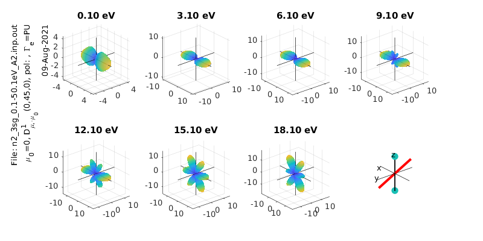
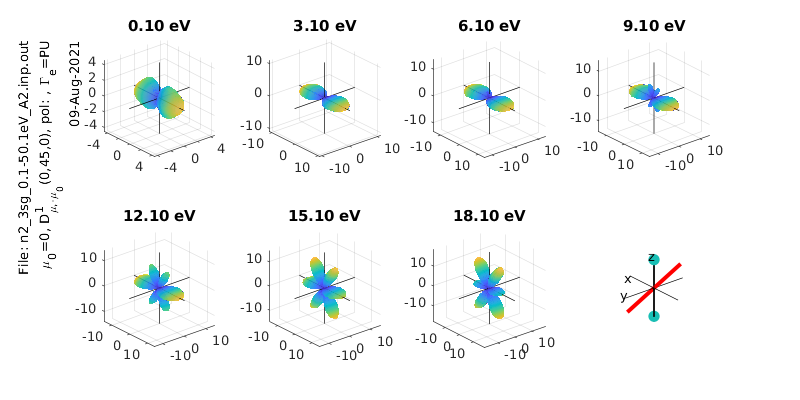

ePSproc Matlab demo
Contents
ePSproc Matlab demo¶
As noted in the main readme/intro doc, ePSproc originally started as a set of Matlab routines, before migration to Python in 2019. Although no longer maintained/updated since ~2018, the Matlab routines are still available as part of the ePSproc distribution. This notebook demos the routines, following the demo script ePSproc_NO2_MFPADs_demo.m (to run this code in a Jupyter environment, a Matlab kernel is required, e.g. Calysto’s Matlab kernel).
Functionality:
Read raw photoionization matrix elements from ePS output files with “dumpIdy” segments
Calculate MF-PADs from the matrix elements (ePSproc_MFPAD.m, see also ePSproc_NO2_MFPADs_demo.m)
Plot MF-PADs
Plot X-sects
(Beta testing): Calculate MF-BLMs from matrix elements, see ePSproc_MFBLM.m
(Under development): Calculate AF-BLMs from matrix elements.
Source:
/matlab: stable matlab code (as per
release v1.0.1 <https://github.com/phockett/ePSproc/releases>__).a set of functions for processing (ePSproc*.m files)
a script showing demo calculations,
ePSproc_NO2_MFPADs_demo.m
/docs/additional contains:
the benchmark results from these calculations,
ePSproc_NO2_testing_summary_250915.pdfadditional notes on ePS photoionization matrix elements,
ePSproc_scattering_theory_ePS_notes_011015.pdf.
See ePSproc: Post-processing suite for ePolyScat electron-molecule scattering calculations <https://www.authorea.com/users/71114/articles/122402/_show_article>_ for more details.
Setup¶
cd('~/github/ePSproc') % Change to ePSproc root dir.
ans =
'9.4.0.813654 (R2018a)'
%% *** SETTINGS
% Set up basic environment
% Name & path to ePS output file. In this version set full file name here, and working directory below.
% fileName='no2_demo_ePS.out' % OK for MFPAD testing, but only single E point
fileName='n2_3sg_0.1-50.1eV_A2.inp.out'
% Set paths for Linux or Win boxes (optional!)
if isunix
dirSlash='/';
else
dirSlash='\';
end
filePath=[pwd dirSlash 'data' dirSlash 'photoionization']; % Root to working directory, here set as current dir/data/photoionization
fileBase=[filePath dirSlash fileName]; % Full path to ePS results file, here set as current working direcory
scriptPath=[pwd dirSlash 'matlab' dirSlash]; % Add path to ePSproc scrips to Matlab path list, here set as current dir/matlab
path(path,[scriptPath]);
fileName =
'n2_3sg_0.1-50.1eV_A2.inp.out'
%% *** Read data
% Variables:
% rlAll contains matrix elements (from DumpIdy segments)
% params contains various calculation parameters
% getCro contains cross-section (from GetCro segments), if present
[rlAll, params, getCro]=ePSproc_read(fileBase);
params.fileBase=fileBase;
params.fileName=fileName;
*** Reading ePS output file
/home/paul/github/ePSproc/data/photoionization/n2_3sg_0.1-50.1eV_A2.inp.out
Found 102 sets of matrix elements
Read 102 sets of matrix elements (0 blank records)
Found 2 symmetries
'SU' 'PU'
Found 51 energies
Found 2 atoms
Found 18 data records
Found 3 sets of cross sections
% Matrix elements are stored in a structure
rlAll
rlAll =
2x51 struct array with fields:
eKE
PE
symm
symmSet
MbNorm
rawIdyHead
rawIdy1
rlnlHead
rlnl1
rawIdy2
rlnl2
pWaveAll
% GetCro outputs (total cross-secions, LF betas)
getCro
getCro =
1x3 struct array with fields:
GetCro
% General calculation params
params
params =
struct with fields:
symmList: {'SU' 'PU' 'All'}
eKE: [1x51 double]
symmAll: {1x102 cell}
eAll: [1x102 double]
nRecords: 102
nEnergies: 51
nSymms: 2
gLmax: 11
blankRec: 0
missingE: [1x0 double]
pWaveAll: [144x51x3 double]
pWaveAllMb: [144x51x3 double]
LMallInd: [144x2 double]
coords: {1x5 cell}
dataRecords: {18x2 cell}
IP: 15.5800
GetCroHeader: {{1x1 cell}}
fileBase: '/home/paul/github/ePSproc/data/photoionization/n2_3sg_0.1-50.1eV_A2.inp.out'
fileName: 'n2_3sg_0.1-50.1eV_A2.inp.out'
Plot cross-sections and betas¶
These are taken from the GetCro segments in the ePS output files, and correspond to results for an isotropic ensemble of molecules, i.e. observables in the lab frame (LF) for 1-photon ionization (see the ePS tutorial for more details).
%% Plot GetCro results for each symm & total
col=2; % Select column from getCro output (see params.GetCroHeader)
figure('color',[1 1 1],'name','GetCro outputs');
for n=1:length(getCro)
plot(getCro(n).GetCro(:,1)-params.IP,getCro(n).GetCro(:,col));
hold on;
end
title({['NO_2 ePS resutls, files ' strrep(fileName,'_','\_')]; 'X-sects from ePS(GetCro) results'});
xlabel('eKE/eV');
ylabel('X-sect/Mb');
legend([params.symmList 'Sum']);
Warning: MATLAB has disabled some advanced graphics rendering features by switching to software OpenGL. For more information, click <a href="matlab:opengl('problems')">here</a>.
Warning: Ignoring extra legend entries.
> In legend>set_children_and_strings (line 646)
In legend>make_legend (line 316)
In legend (line 259)

MFPADs¶
These are calculated numerically from the matrix elements, for a given polarization geometry and symmetry (the method is the same as the python version of the routine).
%% *** Calculate MFPADs - single polarization geometry, all energies and symmetries
% Calculate for specified Euler angles (polarization geometry) & energies
% Set resolution for calculated I(theta,phi) surfaces
res=100;
% ip components to use from ePS output (1=length gauge, 2=velocity gauge)
ipComponents=1;
% it components to use from ePS output (for degenerate cases), set an array here for as many components as required, e.g. it=1, it=[1 2] etc.
it=1;
% Set light polarization and axis rotations LF -> MF
p=0; % p=0 for linearly pol. light, +/-1 for L/R circ. pol.
eAngs=[0 0 0]; % Eugler angles for rotation of LF->MF, set as [0 0 0] for z-pol, [0 pi/2 0] for x-pol, [pi/2 pi/2 0] for y-pol
polLabel='z';
% Run calculation - outputs are D, full set of MFPADs (summed over symmetries); Xsect, calculated X-sects; calcsAll, structure with results for all symmetries.
[Xsect, calcsAll, pWaves]=ePSproc_MFPAD(rlAll,p,eAngs,it,ipComponents,res);
% Add pol labels - currently expected in plotting routine, but not set in MFPAD routine
for n=1:size(calcsAll,2)
for symmIn=1:size(calcsAll,1)
calcsAll(symmInd,n).polLabel=polLabel;
end
end
% Results are output as a structure, dims (symmetries, energies).
calcsAll
calcsAll =
3x51 struct array with fields:
D
C
Cthres
eKE
symm
euler
Xsect
XsectD
Rlf
p
Cind
%plot -s 800,400
(Above is a line-magic for setting displayed plot size with the Calysto kernel - see the demo notebook for more.)
%% Plotting - MFPAD panel plots
% Set plot ranges
symmInd=1; % Select symmetry (by index into calcsAll rows). Final symmetry state is set as sum over all symmetries
% eRange=1; % Select energies (by index into calcsAll cols)
eRange=1:3:20;
% Additional options (optional)
sPlotSet=[2 4]; % Set [rows cols] for subplot panels. The final panel will be replaced with a diagram of the geometry
% titlePrefix='NO2 testing'; % Set a title prefix for the figure
titlePrefix='';
ePSproc_MFPAD_plot(calcsAll,eRange,symmInd,params,sPlotSet,titlePrefix);
% ePSproc_MFPAD_plot(calcsAll,eRange,symmInd,params,sPlotSet,'','n','off');
% ePSproc_MFPAD_plot(calcsAll,eRange,symmInd,params,[2 4],'','n','off');

% Calculate & plot for a different polarization state
eAngs = [0 pi/2 0]; % x-pol case
polLabel = 'x';
[Xsect, calcsAll, pWaves]=ePSproc_MFPAD(rlAll,p,eAngs,it,ipComponents,res);
% Add pol labels - currently expected in plotting routine, but not set in MFPAD routine
for n=1:size(calcsAll,2)
for symmIn=1:size(calcsAll,1)
calcsAll(symmInd,n).polLabel=polLabel;
end
end
symmInd=3;
ePSproc_MFPAD_plot(calcsAll,eRange,symmInd,params,sPlotSet,titlePrefix);
symmInd =
3

% Calculate & plot for a different polarization state
eAngs = [0 pi/4 0]; % Diagonal pol case
polLabel = 'x';
[Xsect, calcsAll, pWaves]=ePSproc_MFPAD(rlAll,p,eAngs,it,ipComponents,res);
% Add pol labels - currently expected in plotting routine, but not set in MFPAD routine
for n=1:size(calcsAll,2)
for symmIn=1:size(calcsAll,1)
calcsAll(symmInd,n).polLabel=polLabel;
end
end
% Plot all symmetries
for symmInd = 1:3
ePSproc_MFPAD_plot(calcsAll,eRange,symmInd,params,sPlotSet,titlePrefix);
end
 


MF \(\beta_{LM}\)¶
%% *** Calculate MFPADs - single polarization geometry, all energies and symmetries
% Calculate for specified Euler angles (polarization geometry) & energies
% Set resolution for calculated I(theta,phi) surfaces
res=100;
% ip components to use from ePS output (1=length gauge, 2=velocity gauge)
ipComponents=1;
% it components to use from ePS output (for degenerate cases), set an array here for as many components as required, e.g. it=1, it=[1 2] etc.
it=1;
% Set light polarization and axis rotations LF -> MF
p=0; % p=0 for linearly pol. light, +/-1 for L/R circ. pol.
eAngs=[0 0 0]; % Eugler angles for rotation of LF->MF, set as [0 0 0] for z-pol, [0 pi/2 0] for x-pol, [pi/2 pi/2 0] for y-pol
polLabel='z';
% Run calculation - outputs are D, full set of MFPADs (summed over symmetries); Xsect, calculated X-sects; calcsAll, structure with results for all symmetries.
calcsAll=ePSproc_MFPAD(rlAll,p,eAngs,it,ipComponents,res);
% Add pol labels - currently expected in plotting routine, but not set in MFPAD routine
% for n=1:size(calcsAll,2)
% for symmIn=1:size(calcsAll,1)
% calcsAll(symmInd,n).polLabel=polLabel;
% end
% end
plot(calcsAll.')